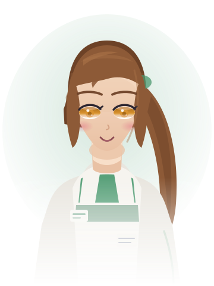

全部由 tools/gen-portraits.mjs 参数化生成，纯矢量、无外部素材。 如果你觉得哪一套不合适，直接告诉我改哪个角色的哪一项（发型 / 配色 / 服装 / 表情）， 或者说「换成真人画的图」，我把文件替换掉即可，代码不用动。
tools/gen-portraits.mjs
情绪一共四种：normal / smile / sad / surprise。游戏里场景自带 mood 就用场景的，没有就按文本关键词自动推断。
